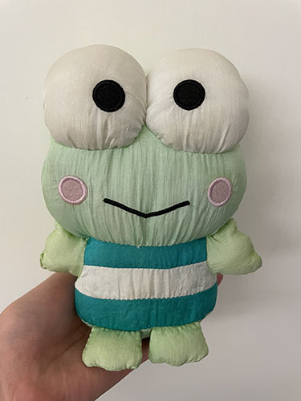

Hello! Here are some things I've done.
Tripos notes. I study mathematics at the University of Cambridge. These are notes I made for revision and quick reference, and I publish them in the hope that someone would find them useful.
Since my original notes are written in Markdown, I also wrote some Python code to convert them to HTML webpages. You can find it on the GitHub repo.
Matvim. A plugin to integrate MATLAB into Neovim, because I got tired of clicking around.
Finessimo. Practice modern Tetris finesse with spaced repetition.
Calsimtor. This was my (incomplete) attempt to reverse engineer the programming language of the CASIO fx-50FH II calculator. I also documented intriguing behaviours of the calculator in the repo.
Mathboard. A prototype web application built using the MyScript iink SDK that recognises semantic structures in handwriting and tidies up symbols' positions after the user deletes existing handwriting.
MyTouchBar. A Touch Bar customisation tool.
MoSticker. An iOS app to create, manage and share WhatsApp stickers, which failed to be published on the App Store :(
You can find out more on my GitHub profile.
Please contact me via my email mokch.moses@gmail.com.
© 2026 Moses Mok
